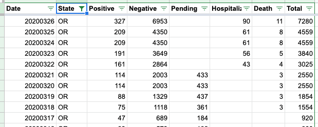

OR: Incorrect data
Comparing my dataset for Oregon (pulled from the official source) against yours, it looks like 3/25 is missing, causing 3/26 to be wrong.
my cases on 3/24-3/26: 209, 266, 316 my increases: 20, 50, 57 your cases: 209, 209, 327 your increases: 18, 0, 118
This may be because of this issue: https://github.com/COVID19Tracking/covid-tracking-api/issues/22
Spotchecking the ‘positive’ counts, they are correct except for 3/25, 3/21, and everything before about 3/19. Most of the older ones are a date-off-by-one error.
I wouldn’t mind being invited to the Slack, if possible. I’m trying to replace my OR and FL datasets with yours to generate some graphs on Wikipedia.
The same is happening between 4/8 and 4/11 for positives and deaths. Other columns are most likely effected too but unable to verify the correct values. #135
This issue has been automatically marked as stale because it has not had recent activity. It will be closed if no further activity occurs. Thank you for your contributions!
This issue has been closed because it was stale for 15 days, and there was no further activity on it for 10 days. You can feel free to re-open it if the issue is important, and label it as “not stale.”
Unfortunately, I am not seeing a screen-capture of historical data, so all I have is a copy of the data we have collected:
[ ] Data collection log:
[ ] Daily Report (cut off at 4pm) 